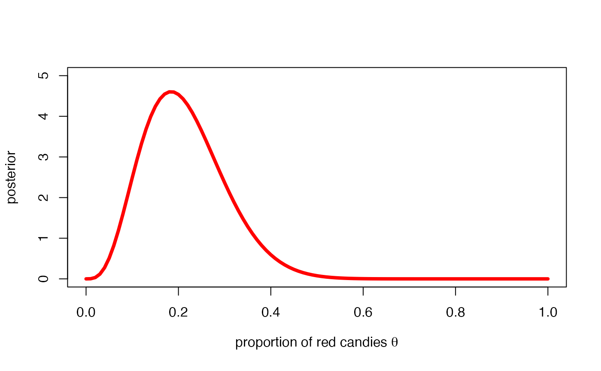
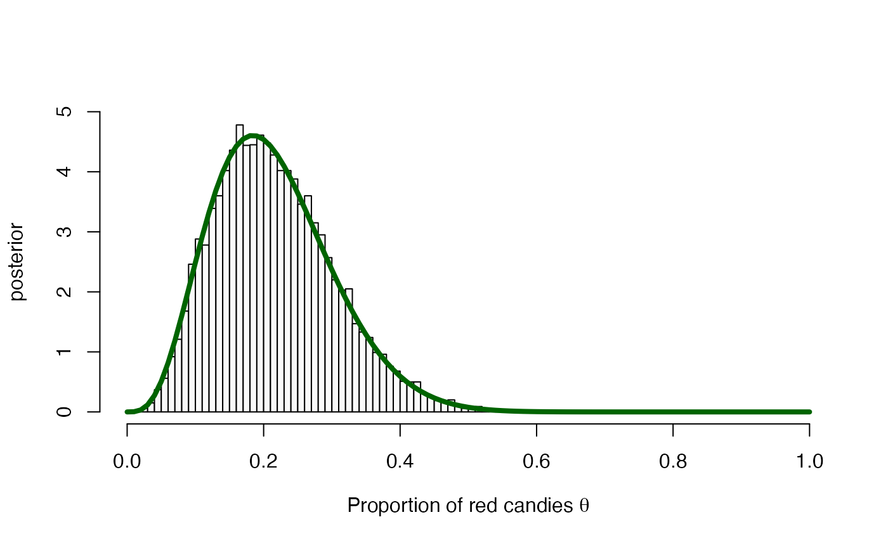
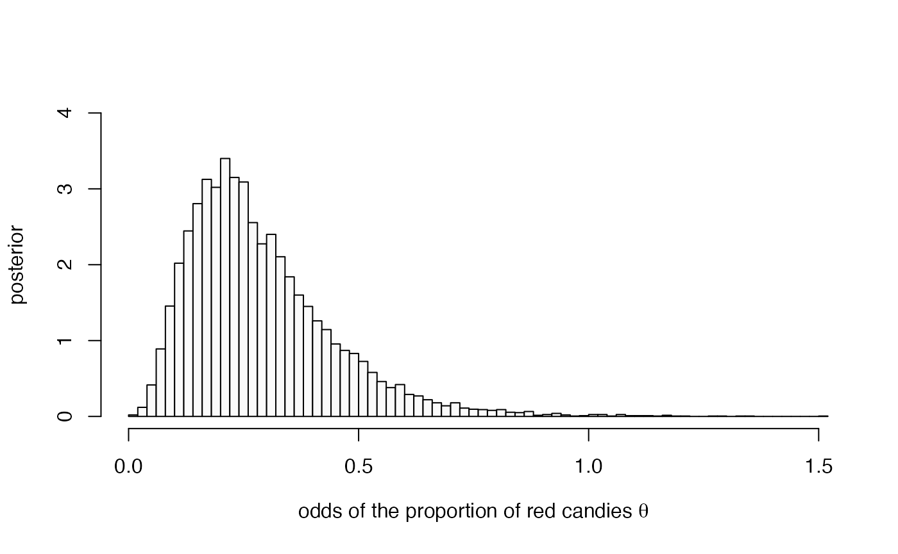
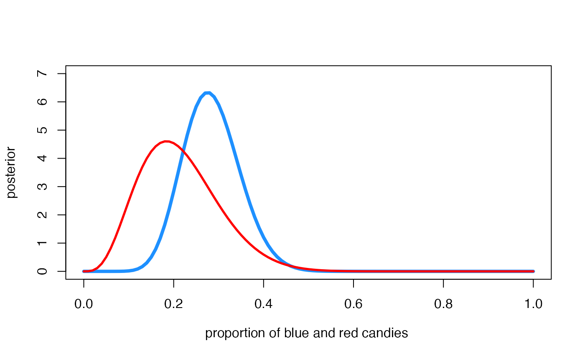
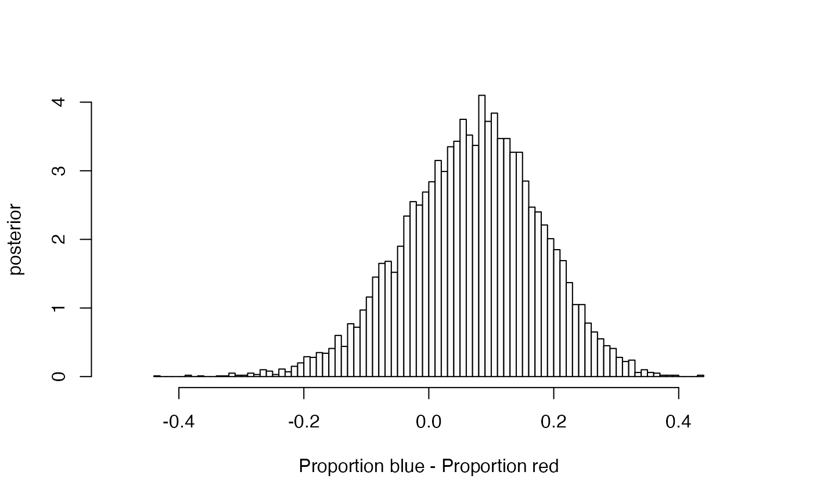

We know that probabilities and proportions take values between 0 and 1. But in some studies the relevant information about them is presented on a different scale. Although different scales can be found in the statistical literature, we will only use the two most popular ones, which are the odds and the log-odds, also known as the logit function.
Any probability \(\theta\) can be expressed in terms of odds as \[\mbox{odds} (\theta)=\frac{\theta}{ 1-\theta}\]
Any probability \(\theta\) can be expressed in the log-odds scale as \[\mbox{log-odds} (\theta)= \mbox{log}\,\frac{\theta}{ 1-\theta}\]
The odds of an event represent the ratio of the probability \(\theta\) that the event will occur to the probability \(1-\theta\) that the event will not occur. The odds scale extends the probability to the set of positive reals. The logit transformation are odds in logarithmic scale and extends the probability to all reals, positive and negative.
Probability-scale transformations.
We return to the M&M problem. We recall that the posterior distribution for the proportion \(\theta\) of red candies in the population that we obtained in the first practice was
\[\pi(\theta \mid \mathcal{D})= \mbox{Be}(\alpha=4.5, \beta= 16.5) \]
whose graphic was
curve(
dbeta(x, 4.5, 16.5),
col = "darkgreen", lwd = 4,
xlim = c(0, 1), ylim = c(0, 5),
xlab = expression(paste("Proportion of red candies ", theta)),
ylab = 'posterior'
)
Let’s obtain the posterior distribution of \(\theta\) on the odds scale, \(\pi(\mbox{odds}(\theta) \mid \mathcal D)\) and we will leave the simulation of \(\pi(\mbox{log-odds}(\theta) \mid \mathcal D)\) as individual work at the end of the practice.
We could try to obtain the posterior distribution \(\pi(\mbox{odds}(\theta) \mid \mathcal D)\) using probabilistic tools but we will not choose that path. Instead, let’s simulate it from a random sample of \(\pi( \theta \mid \mathcal D)\) noting that:
It is clear that the larger the simulated sample the better approximation to the target distribution. We will work with a sample size of \(M=10\,000\) but everyone is free to use the size they want, or even to try different sizes to see how the simulated sample gets closer and closer to the real one when the size of the sample increases. We also compute the posterior \(\pi(\theta \mid \mathcal{D})= \text{Be}(\alpha=4.5, \beta= 16.5)\) and plot it over the simulated sample, to show the match between the empirical and the theoretical distribution.
theta.r <- rbeta(10000, 4.5, 16.5) # random sample of values from the posterior
## Histogram of simulated values
hist(theta.r, breaks = 70, freq=FALSE, col="gray98", main="", xlim=c(0,1), ylim=c(0,5),
xlab=expression(paste("Proportion of red candies ", theta )), ylab="posterior")
curve(
dbeta(x, 4.5, 16.5),
col = "darkgreen", lwd = 4,
xlab = expression(paste("Proportion of red candies ", theta)),
ylab = 'posterior',
add = TRUE
)
We then approximate the posterior distribution of \(\text{odds}(\theta)\) by transforming each sampled value of \(\theta\):
oddstheta.r <- theta.r / (1 - theta.r) # random sample of odds
hist(oddstheta.r,
breaks = 100, freq=FALSE, col="gray98", main="", xlim=c(0,1.5), ylim=c(0,4),
xlab=expression(paste("odds of the proportion of red candies ", theta )),
ylab="posterior"
)
We can also approximate any characteristic of the posteriori distribution that we are interested in, such as the posterior mean, variance, standard deviation, 5th, 50 th and 95th percentile, 95\(\%\) credible interval and any probability posterior probability, e.g. \(P(\mbox{odds}(\theta)>1 \mid \mathcal D)\) by means of the corresponding characteristics of the simulated sample.
summary_table(
mean = mean(oddstheta.r),
var = var(oddstheta.r),
quant = quantile(oddstheta.r, probs = c(0.05, 0.5, 0.95)),
ic95 = quantile(oddstheta.r, probs = c(.025, 0.975)),
prop1 = mean(oddstheta.r > 1),
label = "$\\text{odds}(\\theta)$"
)| Summary | \(\text{odds}(\theta)\) |
|---|---|
| Mean | 0.29 |
| Var | 0.03 |
| S.Dev | 0.16 |
| Q05 | 0.1 |
| Q50 | 0.26 |
| Q95 | 0.59 |
| IC95 | (0.08, 0.69) |
| Prop>1 | 0.3% |
Suppose now that we want to compare the proportion of red and blue candies in the population.
A pile of red and blue peanut M&M’s candies. Photos by Victor Roda.
In the previous practice we have learned about the proportion of red M&Ms but so far we do not know anything about the blue ones. Let’s imagine that we repeat the previous practical again but with the objective of learning about the proportion of blue candies \(\theta_b\) and that the resulting Bayesian learning process has been:
We denote \(\theta_r\) the proportion of red candies from now on. We plot the posterior distributions of the proportion of red and blue candies the same graph.
curve(
dbeta(x, 14.5, 36.5), # Posterior proportion of blue candies
col = "dodgerblue1", lwd = 4,
xlim = c(0, 1), ylim = c(0, 7),
xlab = expression(paste("Proportion of blue and red candies ", theta)),
ylab = 'posterior'
)
curve(
dbeta(x, 4.5, 16.5), # Posterior proportion of red candies
col = "red", lwd = 4,
add = TRUE
)
Visually, we observe that the proportion of blue candies is slightly higher than that of the red ones. Also, the posterior distribution of the proportion of blue candies is slightly narrower since the sample size used (\(n = 50\)) is larger than for red candies (\(n = 20\)). More information available implies increased certainty on the posterior inference.
We have separate information about each proportion through their posterior distributions. We would like to obtain a distribution that provides joint information about both quantities. Since the inferential processes, prior distribution, experiment, data and likelihood function, for both proportions are independent of each other we will have that the joint posterior distribution of both proportions are independent a posteriori.
\[\pi(\theta_r, \theta_b \mid \mathcal D_r, \mathcal D_b)= \mbox{Be}(\theta_r \mid 4.5, 16.5) \, \mbox{Be}(\theta_b \mid 14.5, 36.5),\]
where \(\mathcal D_r\) is from now on the data of the inferential process of the red M&M’s.
There are many alternative ways of comparing both proportions. The most popular are possibly the risk difference, \(\theta_b - \theta_r\) or \(\theta_r - \theta_b\), and the relative risk, \(\theta_b /\theta_r\) or \(\theta_r / \theta_b\). Let’s focus on \(\theta_b - \theta_r\). Since \(\theta_b - \theta_r\) is a function of \(\theta_b\) and \(\theta_r\), it would make sense to consider the posterior distribution of its difference \(\pi(\theta_b - \theta_r \mid \mathcal D_b, \mathcal D_r)\). Such a distribution is not analytical, but we can simulate it in the following way:
We are going to graphically represent this distribution and to calculate approximately its main characteristics.
theta.r <- rbeta(10000, 4.5, 16.5)
theta.b <- rbeta(10000, 14.5, 36.5)
theta.dif <- theta.b - theta.r
hist(theta.dif, breaks = 70, freq = FALSE, col = "gray98", main = "",
xlim = c(-0.5,+0.5), ylim = c(0, 4),
xlab = "Proportion blue - Proportion red", ylab = "posterior")
summary_table(
mean = mean(theta.dif),
var = var(theta.dif),
quant = quantile(theta.dif, probs = c(0.05, 0.5, 0.95)),
ic95 = quantile(theta.dif, probs = c(.025, 0.975)),
prop0 = mean(theta.dif > 0),
label = "$\\theta_b - \\theta_r$"
)| Summary | \(\theta_b - \theta_r\) |
|---|---|
| Mean | 0.07 |
| Var | 0.01 |
| S.Dev | 0.11 |
| Q05 | -0.12 |
| Q50 | 0.07 |
| Q95 | 0.24 |
| IC95 | (-0.16, 0.26) |
| Prop>0 | 74.6% |
We will now work individually on the simulation procedure of the posterior distribution of a function of the quantity of interest and also the comparison of two groups through the relative risk.
Compute the posterior distribution of the proportion of red M&M’s in the log-odds scale as well as its main characteristics
Compare the proportion of red and blue M&M’s through the relative risk \(\theta_b/\theta_r\).
It would be good if we could make a little reflection on the frequentist procedure to compare two proportions and on the differences with the Bayesian procedure.
E.g. what does the result below tells you, and what is the relationship with what we have just done
prop.test(x = c(r = 4, b = 14), n = c(r = 20, b = 50))
#>
#> 2-sample test for equality of proportions with continuity correction
#>
#> data: c(r = 4, b = 14) out of c(r = 20, b = 50)
#> X-squared = 0.15144, df = 1, p-value = 0.6972
#> alternative hypothesis: two.sided
#> 95 percent confidence interval:
#> -0.3299894 0.1699894
#> sample estimates:
#> prop 1 prop 2
#> 0.20 0.28